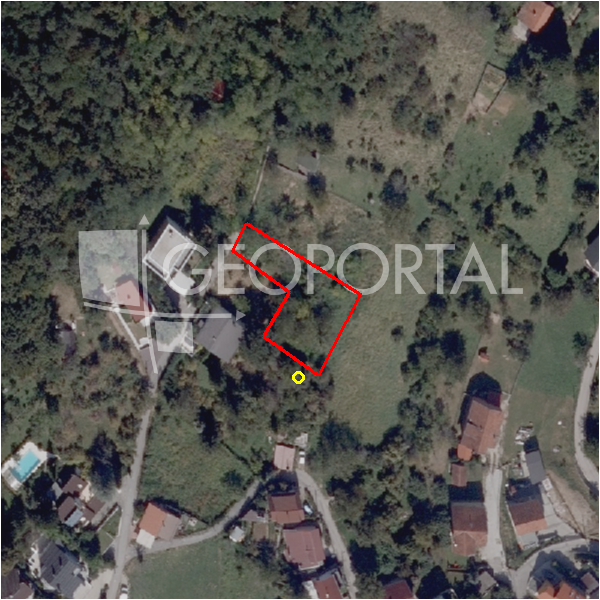

#8437 · Građevinsko zemljište, 914m², Markuševec, Gornja Dubrava, Zagreb
Markuševec, Podsljeme, Grad Zagreb · zemljiste · njuskalo · status active · oglas ↗
Ocjena
- Score
- 56 rule 56 · LLM – · 12.09.2026.
- RLV
- 138.000 € (152 €/m²) · ratio 2,50
- Ukupna investicija
- 977.000 €
- GBP
- 450 m²
- Feedback
- –
- CRM
- –
Oglas
- Cijena
- 55.000 € (60 €/m²)
- Površina
- 914 m² · DKP 907 m² (odstupanje -0,8 %)
- Prodavatelj
- agencija · Homefinder
- Prvi put
- 11.09.2026. · zadnje 11.09.2026. · 0 d na tržištu
Povijest cijene
| Datum | Cijena |
|---|---|
| 11.09.2026. | 55.000 € |
Flagovi
nagib_gt_25 nagib > 25 % (−10)zone_uncertainty zona nije pregledana (reviewed: false) (−5)
gbp_ogranicen gbp_ogranicen
llm_pending LLM ekstrakcija/ocjena nedostupna
Komponente score-a
| rlv | {'gbp': 450.0, 'kis': 1.2, 'nkp': 369.0, 'noi': None, 'rlv': 137740.30434782617, 'ratio': 2.504369169960476, 'value': None, 'phases': 1, 'profile': 'zagreb_visestambeno', 'gdv_neto': 1269360.0, 'cost_soft': 29700.0, 'gdv_bruto': 1586700.0, 'kis_known': True, 'total_inv': 976750.0, 'cost_build': 742500.0, 'cost_other': 146250.0, 'cost_sales': 47601.0, 'demolition': False, 'gbp_source': 'cap:max_units=3', 'rlv_per_m2': 151.83348877601597, 'parcel_area': 907.18, 'parcelation': False, 'roi_on_cost': 0.25084105451753264, 'profit_at_ask': 245009.0, 'cost_demolition': 0.0, 'total_inv_phase': 976750.0, 'parcel_area_effective': 907.18, 'sale_price_per_m2_nkp': 4300.0} |
| hard | [] |
| info | ['gbp_ogranicen', 'llm_pending'] |
| rubric | {'permits': {'max': 10.0, 'detail': {'permit': 'none'}, 'points': 0.0}, 'physical': {'max': 10.0, 'detail': {'slope_pct': 45.96, 'road_access': 'yes', 'slope_points': 0.0}, 'points': 3.0}, 'liquidity': {'max': 10.0, 'detail': {'n_cuts': 0, 'points_cut': 0.0, 'points_days': 0.03333333333333333, 'seller_type': 'agencija', 'points_fresh': 1.0, 'price_cut_pct': None, 'days_on_market': 1, 'points_private': 0}, 'points': 1.03}, 'rlv_ratio': {'max': 40.0, 'detail': {'rlv': 137740, 'ratio': 2.504, 'asking_price': 55000.0}, 'points': 40.0}, 'zone_quality': {'max': 15.0, 'detail': {'no_upu': True, 'source': 'gis', 'zone_class': 'stambeno', 'zone_ideal': True, 'gp_uredjeni': True}, 'points': 12.0}, 'price_vs_benchmark': {'max': 15.0, 'detail': {'source': 'auto:Podsljeme', 'deviation': 0.624, 'ask_eur_m2': 60, 'benchmark_eur_m2': 160.0}, 'points': 15.0}} |
| weights | {'llm': 0.4, 'rule': 0.6, 'model': 0.0} |
| penalties | {'nagib_gt_25': 10, 'zone_uncertainty': 5} |
| raw_score | 71,0 |
| rlv_notes | ['GBP 1089 → 450 m² (ograničenje max_units=3)'] |
| flag_notes | {'max_gbp': 1089, 'slope_pct': 45.96, 'total_inv': 976750, 'zone_code': 'S', 'zone_class': 'stambeno', 'zone_source': 'gis', 'zone_reviewed': False, 'commercial_pct': 0.0, 'commercial_source': 'zone_rule'} |
| caps_applied | [] |
GIS
- Čestica
- k.o. 335347, k.č. 11235 (pin_buffer, 0,85); k.o. 335347, k.č. 11248 (pin_buffer, 0,84); k.o. 335347, k.č. 11180/1 (pin_buffer, 0,84)
- Zona
- S (stambeno) · NIJE pregledana
- kig / kis / katnost
- 0,30 / 1,20 / Po+P+2+Pk
- GP / UPU
- uredjeni · UPU ne
- Pristup / nagib
- yes · 46,0 % (max 64,9 %)
- More
- –
- Zaštite
- Natura ne · zaštićeno ne · kulturno dobro ne
- Zgrade na čestici
- 0 %
- Match
- 0,85
Karta
Ortofoto (DOF)

RLV kalkulacija — pretpostavke
| gbp | {'value': 450.0, 'source': 'cap:max_units=3'} |
| kis | {'value': 1.2, 'source': 'gis'} |
| soft_pct | {'value': 0.04, 'source': 'profil'} |
| nkp_ratio | {'value': 0.82, 'source': 'profil'} |
| cost_other | {'value': 146250.0, 'source': 'profil: doprinosi+uređenje po m² GBP, financiranje+rezerva % gradnje'} |
| parcel_area | {'value': 907.18, 'source': 'dkp'} |
| asking_price | {'value': 55000.0, 'source': 'oglas'} |
| margin_on_cost | {'value': 0.15, 'source': 'profil'} |
| build_cost_per_m2_gbp | {'value': 1650.0, 'source': 'profil'} |
| sale_price_per_m2_nkp | {'value': 4300.0, 'source': 'benchmark:seed:Podsljeme'} |
| transfer_tax_and_acquisition | {'value': 0.06, 'source': 'profil'} |
Ekstrakcija iz oglasa
| utilities | ['struja', 'voda', 'kanalizacija'] |
| zone_claim | S |
| access_road | yes |
Opis oglasa
Prodaje se građevinsko zemljište površine 914m², u mirnoj ulici okruženoj zelenilom i prirodom u blizini Markuševca, na području Gornje Dubrave. Zemljište je stambene namjene te je idealno za izgradnju obiteljske kuće ili vikendice za bijeg iz gradske gužve i odlično povezano sa gradom. Prednosti zemljišta: - zemljište se nalazi odmah uz asfaltiranu cestu. - dostupne su sve komunalije (struja, voda, kanalizacija..) - okruženo zelenilom i prirodom sa prekrasnim pogledom. Povezanost sa gradom: - Osnovna Škola na 5 minuta sa autom. (1,6 km) - Garden Mall na 10 minuta sa autom. (8 km) - Klinička bolnica Dubrava na 10 minuta sa autom. (6,5 km) Zemljište predstavlja idealnu mogućnost izgradnje doma po vlasrtitoj mjeri ili vikendici za bijeg iz gradske gužve i odmaranje uz prirodu i predivni pogled. Za sve informacije ili dogovor za razgledavanje, slobodno se javite. ID KOD AGENCIJE: 785 Tomislav Rožić Agent s licencom Mob: 091 9278 400 E-mail: t.rozic@homefinder.hr www.homefinder.hr